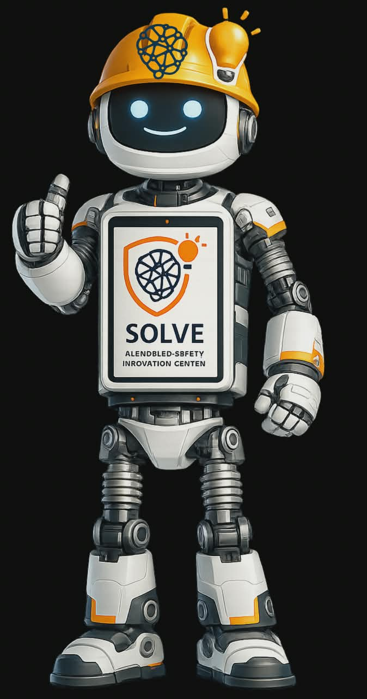

Ask anything about fall protection, PPE, standards and Karam products. Powered by our complete technical knowledge base.
EN, ANSI, CSA and IS standards answered instantly.
Right harness, lanyard, SRL or lifeline for your job.

Click Start and ask anything about safety, compliance or risk.
Fall factors, lifeline design and rescue planning.
Backed by white papers, test reports and certificates.
Need a full safety platform demo?
Explore how Arresto transforms safety & compliance with 20+ integrated modules.
MR Solve draws answers strictly from verified Karam safety documentation. For critical safety decisions always consult a qualified engineer.